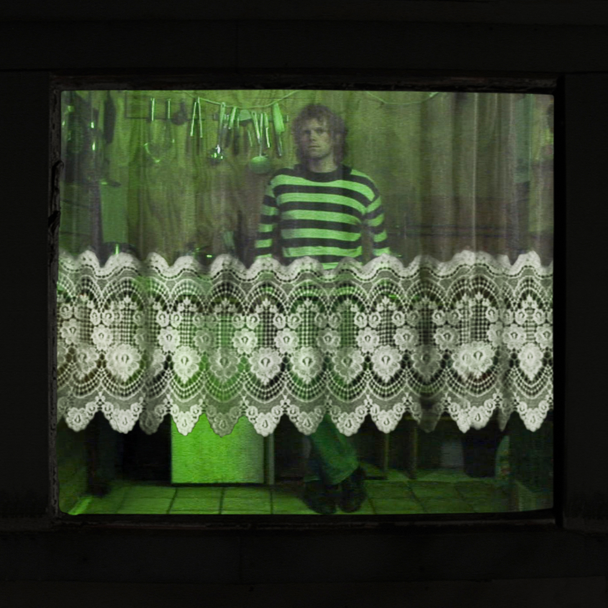

De Tuin (2024)
- 1. Oude Gewoonte 3:52
- 2. Bobbie's Oudergesprek 4:01
- 3. loze woorden 1:22
- 4. Marco Polo 3:58
- 5. woordeloos 1:01
- 6. Doe Je Best 2:44
- 7. woordeloos (weer) 1:28
Credits: joris jenster, thijs jenster

Credits: joris jenster, thijs jenster